Snakes of Sri Lanka
110 snake species are recorded in Sri Lanka in SnakeList: 36 venomous and 74 non-venomous, from 10 families.
- 110species
- 36venomous
- 74non-venomous
- 10families
These totals count the snakes SnakeList records as living in Sri Lanka. A species counts if it is recorded anywhere in the country, so not every snake lives in every region.
Species
Showing 110 species
 Annulated Sea SnakeHydrophis cyanocinctus
Annulated Sea SnakeHydrophis cyanocinctus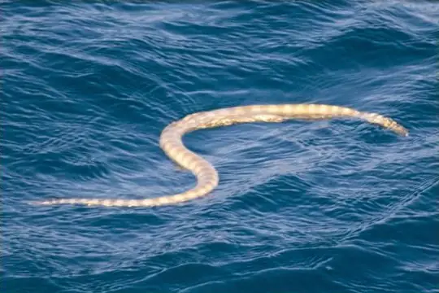
Arabian Gulf Sea SnakeHydrophis lapemoides Banded KraitBungarus fasciatus
Banded KraitBungarus fasciatus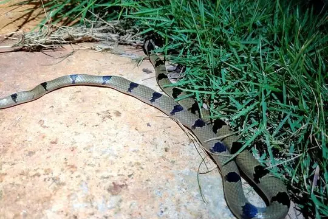
Banded KukriOligodon arnensis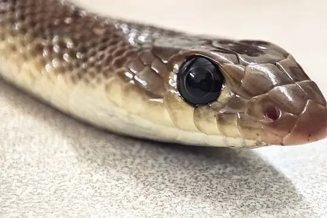
Banded Racer (fasciolata)Argyrogena fasciolata Banded Racer (fasciolatus)Lycodon fasciolatus
Banded Racer (fasciolatus)Lycodon fasciolatus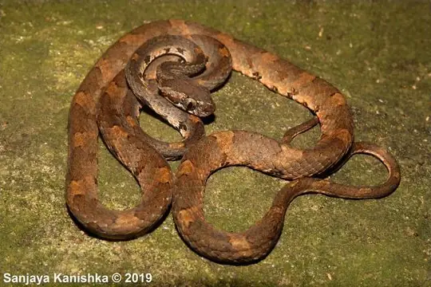
Barnes’s Cat SnakeBoiga barnesii Barred Wolf SnakeLycodon striatus
Barred Wolf SnakeLycodon striatus Black-banded Sea SnakeHydrophis nigrocinctus
Black-banded Sea SnakeHydrophis nigrocinctus Blood-bellied CoralsnakeCalliophis haematoetron
Blood-bellied CoralsnakeCalliophis haematoetron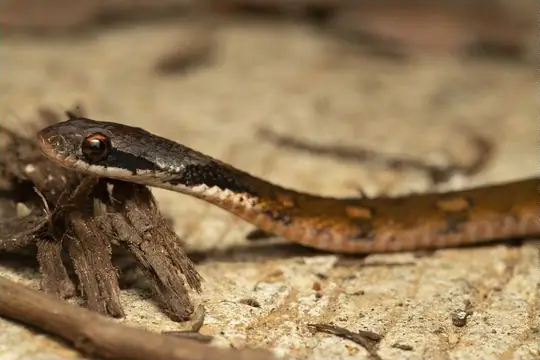
Blossom KraitRhabdophis ceylonensis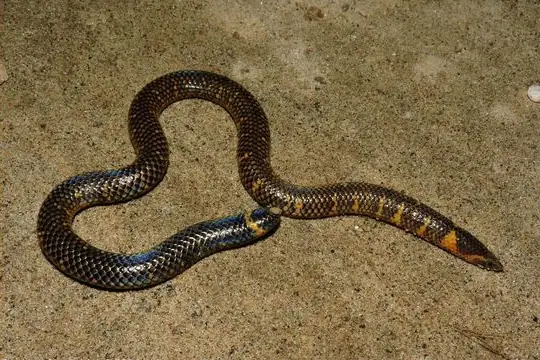
Blyth's earth snakeRhinophis blythii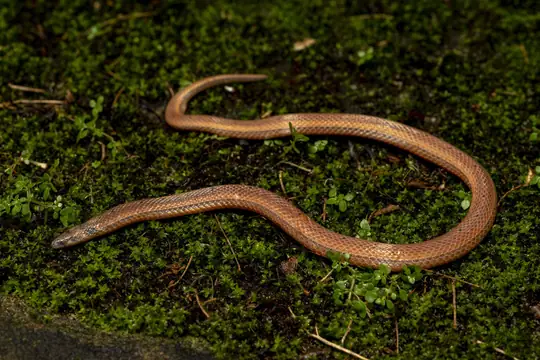
Boie's Rough-sided SnakeAspidura brachyorrhos- No photo yetBombay Sea SnakeHydrophis mamillaris
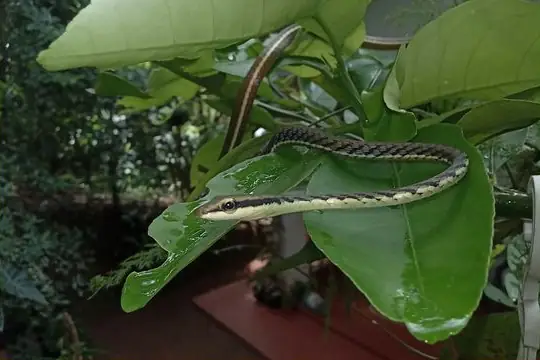
Boulenger's BronzebackDendrelaphis bifrenalis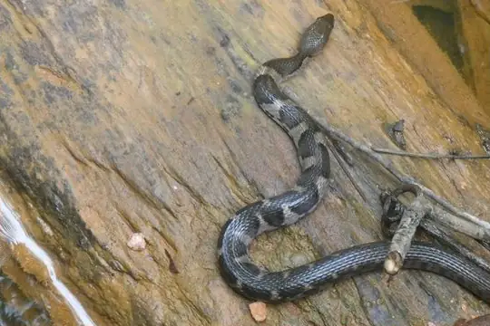
Boulenger's Keelback (asperrimus)Fowlea asperrimus Brown-speckled WhipsnakeAhaetulla pulverulenta
Brown-speckled WhipsnakeAhaetulla pulverulenta Buff Striped KeelbackAmphiesma stolatum
Buff Striped KeelbackAmphiesma stolatum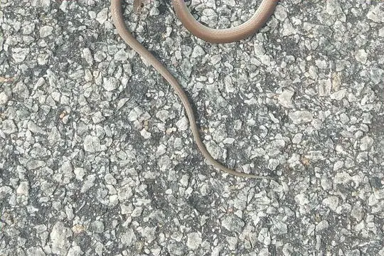
Calamaria Reed SnakeLiopeltis calamaria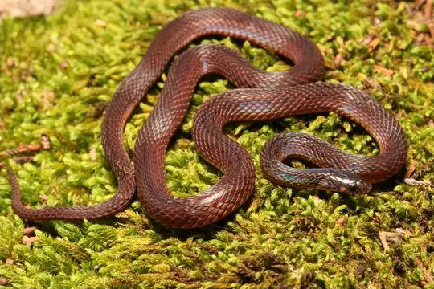
Ceylon KeelbackAspidura ceylonensis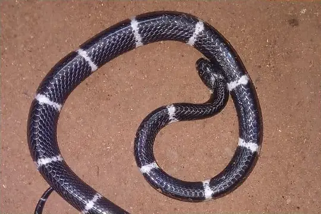
Ceylon KraitBungarus ceylonicus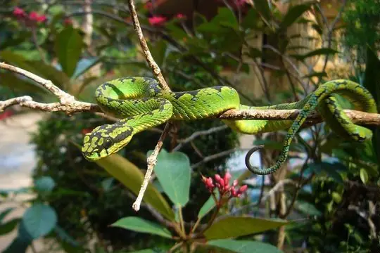
Ceylon Pit ViperCraspedocephalus trigonocephalus Ceylon Wolf SnakeLycodon carinatus
Ceylon Wolf SnakeLycodon carinatus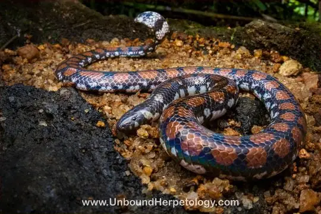
Ceylonese Cylinder SnakeCylindrophis maculatus- No photo yetCheckered KeelbackXenochrophis piscator
 Chequered KeelbackFowlea piscator
Chequered KeelbackFowlea piscator- No photo yetChestnut Worm SnakeIndotyphlops tenebrarum
- No photo yetCollared Sea SnakeHydrophis stricticollis
- No photo yetColombo Wolf SnakeLycodon anamallensis
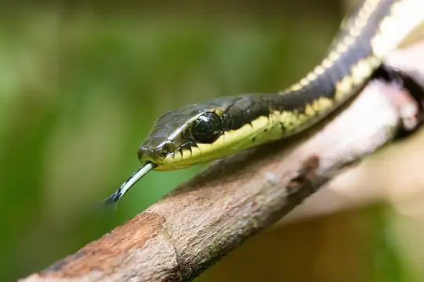
Common BronzebackDendrelaphis schokari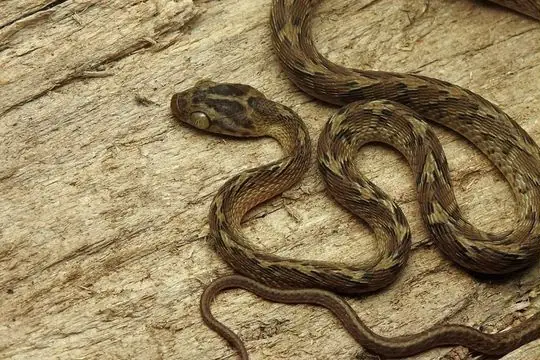
Common Cat SnakeBoiga trigonata Common KraitBungarus caeruleus
Common KraitBungarus caeruleus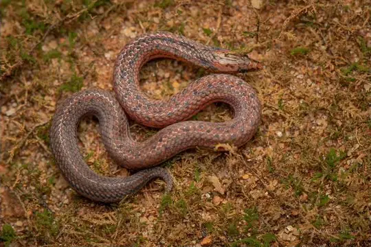
Common Rough-sided SnakeAspidura trachyprocta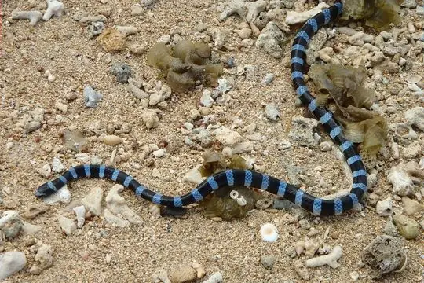
Common sea kraitLaticauda laticaudata Common SeasnakeHydrophis schistosus
Common SeasnakeHydrophis schistosus Common Wolf Snake (aulicus)Lycodon aulicus
Common Wolf Snake (aulicus)Lycodon aulicus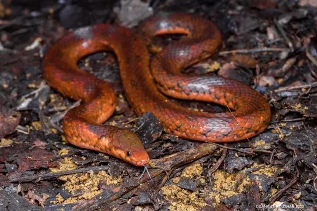
Cope's Rough-sideAspidura copei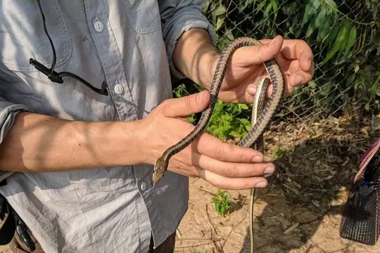
Daudin's BronzebackDendrelaphis tristis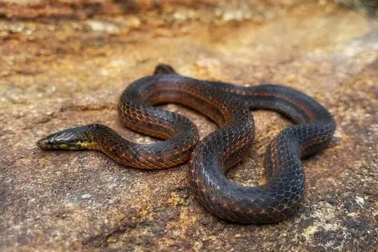
de Silva’s Rough-Side SnakeAspidura desilvai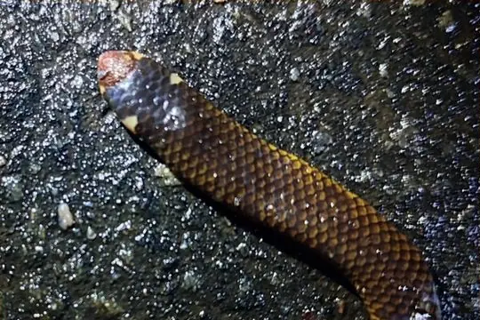
Deraniyagala's Earth SnakeRhinophis tricoloratus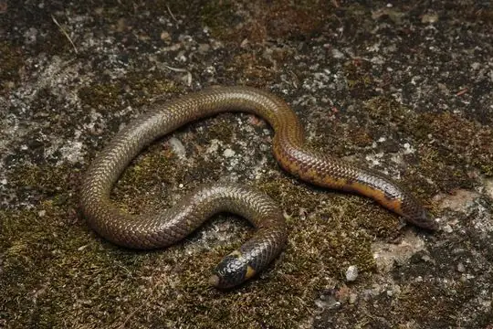
Drummond-hay's Earth SnakeRhinophis drummondhayi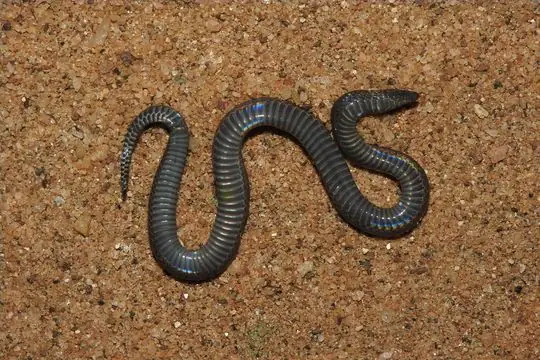
Drummond-Hay's Rough-sided SnakeAspidura drummondhayi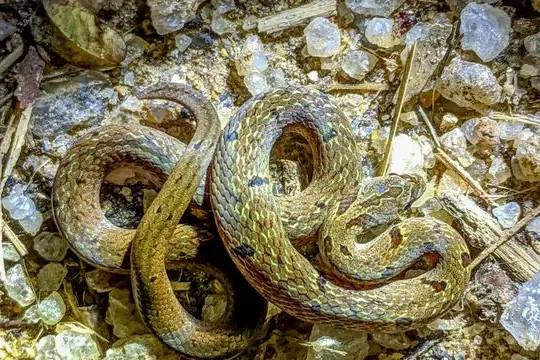
Duméril's Kukri SnakeOligodon sublineatus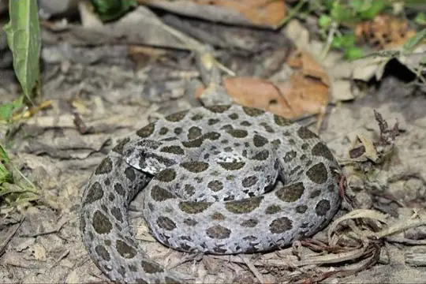
Eastern Russel's ViperDaboia siamensis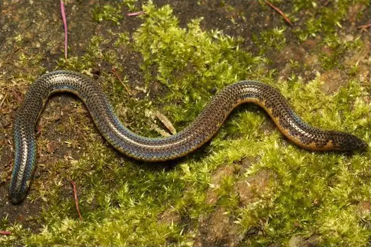
Eranga Viraj's Shieldtail SnakeRhinophis erangaviraji- No photo yetEstuarine Sea SnakeHydrophis obscurus
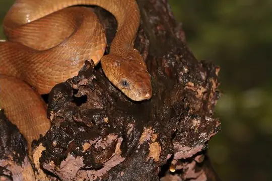
Forsten's Cat SnakeBoiga forsteni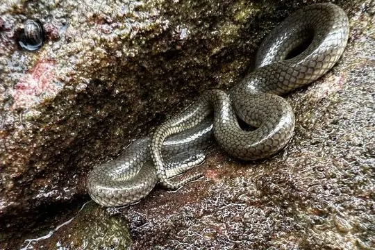
Gerard's water snakeGerarda prevostiana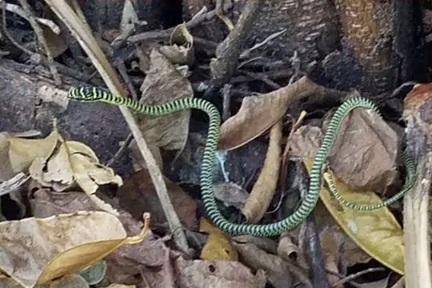
Golden Flying SnakeChrysopelea ornata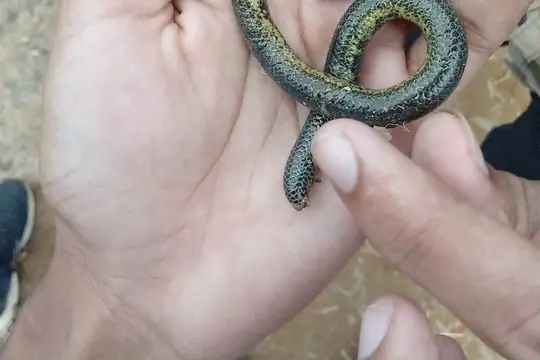
Gray's Earth SnakeRhinophis melanogaster Green Vine Snake (nasuta)Ahaetulla nasuta
Green Vine Snake (nasuta)Ahaetulla nasuta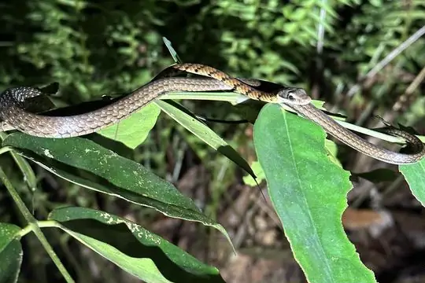
Gunther's Bronzeback Tree SnakeDendrelaphis caudolineolatus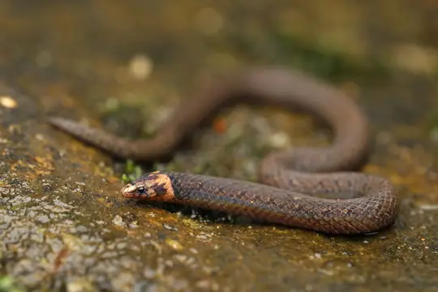
Günther's Rough-sided SnakeAspidura guentheri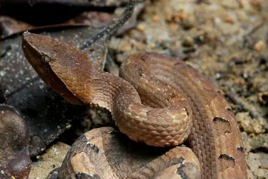
Hump-nosed MoccasinHypnale hypnale Indian CobraNaja naja
Indian CobraNaja naja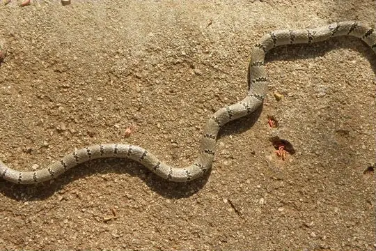
Indian Flying SnakeChrysopelea taprobanica Indian Rock PythonPython molurus
Indian Rock PythonPython molurus- No photo yetJan's Worm SnakeGerrhopilus mirus
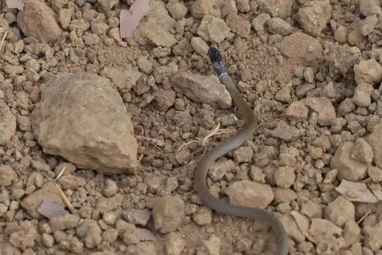
Jerdon's Many-tooth SnakeSibynophis subpunctatus- No photo yetJerdon's Sea SnakeHydrophis jerdonii
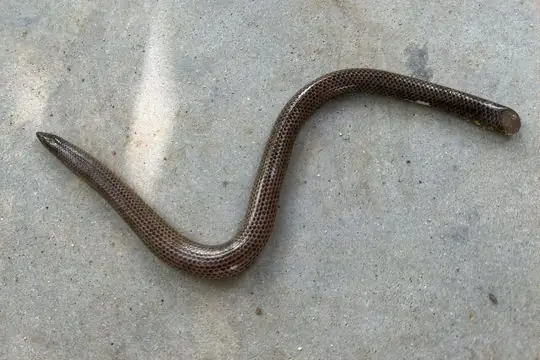
Large Shieldtail SnakeRhinophis saffragamus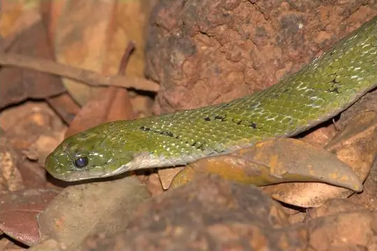
Lead KeelbackRhabdophis plumbicolor- No photo yetLong Worm SnakeIndotyphlops longissimus
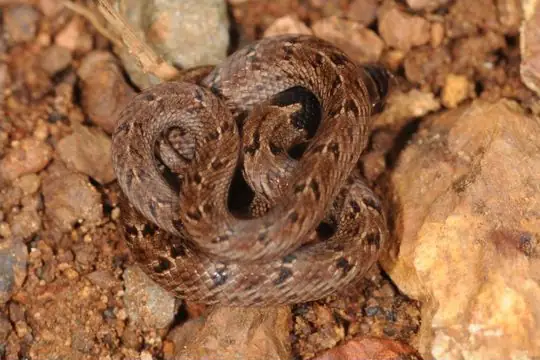
Loos SnakeOligodon taeniolatus- No photo yetMalcolm's Worm SnakeIndotyphlops malcolmi
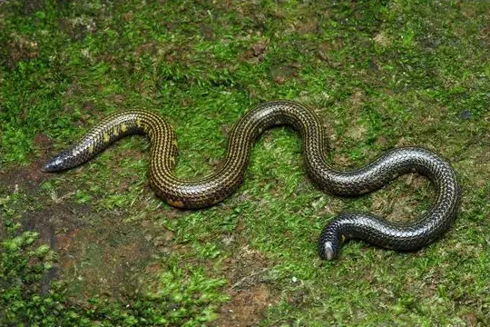
Matale ShieldtailRhinophis gunasekarai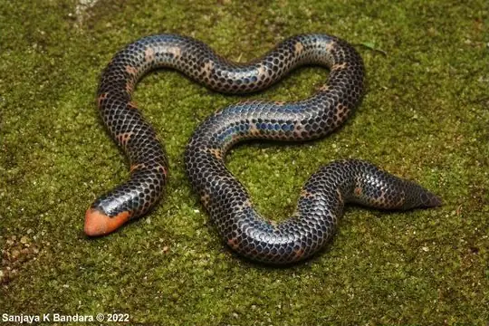
Mendis' ShieldtailRhinophis mendisi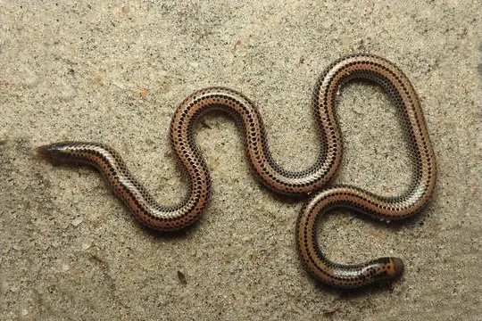
Müller's Earth SnakeRhinophis punctatus Olive Keelback Wart SnakeAtretium schistosum
Olive Keelback Wart SnakeAtretium schistosum- No photo yetOliver's BronzebackDendrelaphis oliveri
 Oriental RatsnakePtyas mucosa
Oriental RatsnakePtyas mucosa Ornate Sea SnakeHydrophis ornatus
Ornate Sea SnakeHydrophis ornatus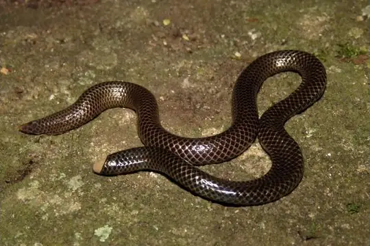
Peters' Philippine Earth SnakeRhinophis philippinus- No photo yetPeters' Sea SnakeHydrophis bituberculatus
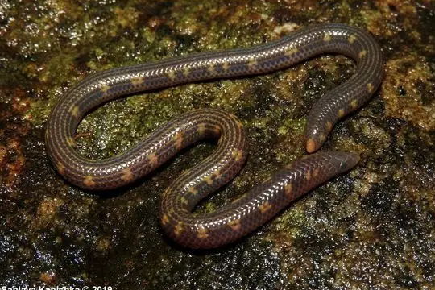
Phillipps' Earth SnakeRhinophis phillipsi- No photo yetPied Worm SnakeIndotyphlops leucomelas
- No photo yetPlain SeasnakeHydrophis inornatus
- No photo yetPolkadot Earth SnakeRhinophis dorsimaculatus
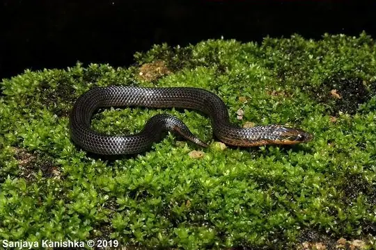
Ravana's Rough-side SnakeAspidura ravanai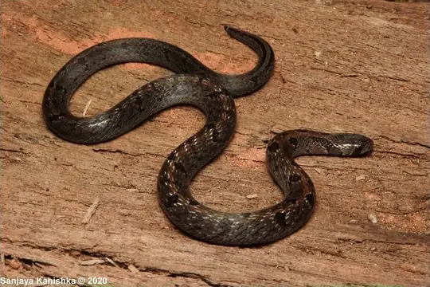
Reed-like Kukri SnakeOligodon calamarius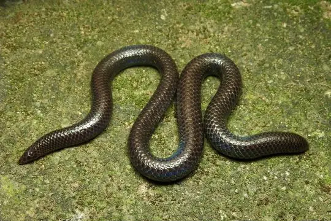
Roshan Perera's ShieldtailRhinophis roshanpererai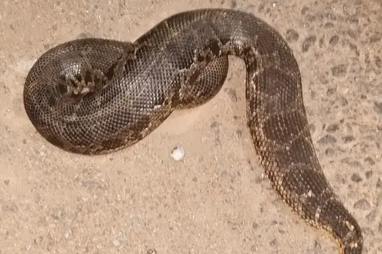
Rough-tailed Sand BoaEryx conicus Russell's ViperDaboia russelii
Russell's ViperDaboia russelii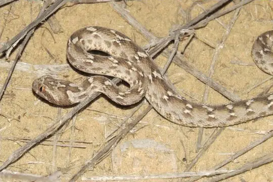
Saw-scaled ViperEchis carinatus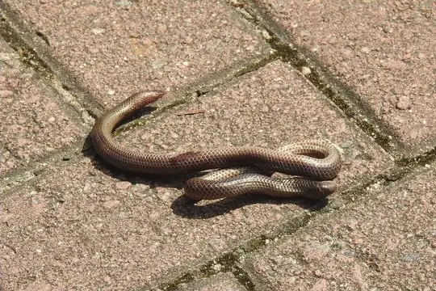
Schneider's Earth SnakeRhinophis oxyrhynchus Short Sea SnakeHydrophis curtus
Short Sea SnakeHydrophis curtus- Sinharaja tree snakeDendrelaphis effrenis
- Sri Lanka Cat SnakeBoiga ceylonensis
- Sri Lanka Humpnose ViperHypnale nepa
- No photo yetSri Lanka Rough-sided SnakeAspidura deraniyagalae
- No photo yetSri Lanka Worm SnakeIndotyphlops lankaensis
- Sri Lanka Worm Snake (ceylonicus)Gerrhopilus ceylonicus
- No photo yetSri Lankan Bridle SnakeLycodon chithrasekarai
 Stoke's SeasnakeHydrophis stokesii
Stoke's SeasnakeHydrophis stokesii- Striped RhinophisRhinophis lineatus
- Travancore Hills Thorntail SnakePlatyplectrurus madurensis
- Trevelyan's Earth SnakeRhinophis homolepis
 Trinket SnakeCoelognathus helena
Trinket SnakeCoelognathus helena- No photo yetVedda Worm SnakeIndotyphlops veddae
 Vellore Bridal SnakeLycodon nympha
Vellore Bridal SnakeLycodon nympha- No photo yetViolet Worm SnakeIndotyphlops violaceus
 Viperine Sea SnakeHydrophis viperinus
Viperine Sea SnakeHydrophis viperinus- Wickramasinghes BronzebackDendrelaphis wickrorum
- Willey's Earth SnakeRhinophis porrectus
 Yellow Sea SnakeHydrophis spiralis
Yellow Sea SnakeHydrophis spiralis Yellow-bellied Sea SnakeHydrophis platurus
Yellow-bellied Sea SnakeHydrophis platurus Yellow-lipped Sea KraitLaticauda colubrina
Yellow-lipped Sea KraitLaticauda colubrina- ZaraHypnale zara
- No photo yetZigzag RhinophisRhinophis zigzag
- No photo yetPseudoboa krait
No snakes in Sri Lanka match.
Sri Lanka’s snakes in numbers
- Families: Colubridae 48, Elapidae 23, Uropeltidae 19, Typhlopidae 7, Viperidae 7, Gerrhopilidae 2, Boidae 1, Cylindrophiidae 1, Homalopsidae 1, Pythonidae 1.
- 55 are recorded in no other country in SnakeList: Barnes’s Cat Snake, Blood-bellied Coralsnake, Blossom Krait, Blyth's earth snake, Boie's Rough-sided Snake, Boulenger's Keelback (asperrimus), Ceylon Keelback, Ceylon Krait, Ceylon Pit Viper, Ceylon Wolf Snake, Ceylonese Cylinder Snake, Chestnut Worm Snake and 43 more.
States and provinces
The states and provinces where SnakeList records snakes, with how many species each has. Each page has its families, venomous snakes, the species found only there, its cities and neighbours.
- Anuradhapura 16 species
- Badulla 7 species
- Batticaloa 1 species
- Colombo 15 species
- Galle 24 species
- Gampaha 10 species
- Hambantota 22 species
- Jaffna 1 species
- Kalutara 23 species
- Kandy 28 species
- Kegalle 21 species
- Kurunegala 9 species
- Mannar 3 species
- Matale 23 species
- Matara 21 species
- Monaragala 16 species
- Mullaitivu 4 species
- Nuwara Eliya 18 species
- Polonnaruwa 10 species
- Puttalam 11 species
- Ratnapura 28 species
- Trincomalee 1 species
No place matches that.
Cities
Its biggest cities, biggest first. Snakes are recorded by state or province, not by city, so each city page shows the snakes of the state or province it is in.
- Colombo Colombo
- Dehiwala-Mount Lavinia Colombo
No place matches that.